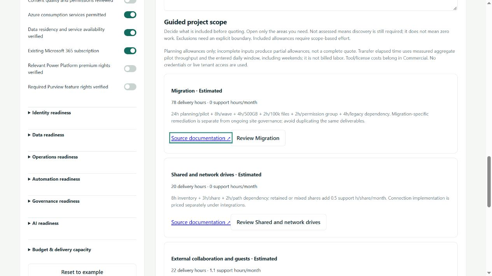

Step 1 of 4 · Assess
What does the client need?
Establish the opportunity, users, outcomes, constraints, and workstreams before presenting a solution.
Fictional sample
- Assessment
- Northwind collaboration review
- Users in scope
- 250
- Primary need
- Collaboration ownership and governed knowledge
Captured here
- Business goals and required outcomes
- Environment, migration, partner and regional scope
- Budget, delivery capacity and deadline constraints
